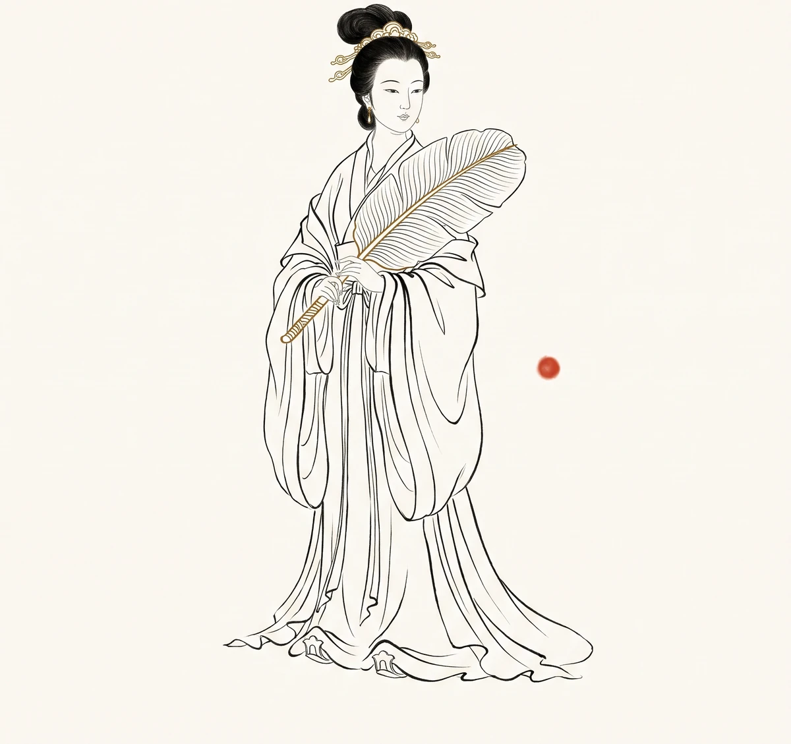

铁扇公主

轨标：教学讲解 人物类别：妖魔 · 罗刹女 数据指标：出场 3 回（第 59-61 回），前因 1 回（第 42 回），总提及 ~80 次（待全量数据验证） 核验状态：未核验
一、出处与身世
来历
铁扇公主，又名罗刹女。"罗刹"是佛教八部众之一，本是食人恶鬼——可她偏不食人，只守一把扇子，居一座空山。 这一名字与行迹的反差，是她的第一重隐喻：她不是天生的恶，是被生活磨出来的鬼。
法宝
芭蕉扇。这扇一扇熄火、二扇生风、三扇下雨，是火焰山一方的命脉。铁扇公主据有这样一件利物，却未据以为王——她只是"守着"。 守扇，守洞，守一个早已不在身边的丈夫，守一个已被观音收走的儿子。
婚姻
- 夫：牛魔王（已分居，入赘积雷山玉面狐狸处）
- 子：红孩儿（被观音收为善财童子）
- 居：翠云山芭蕉洞
一家三口，散在三处。 芭蕉洞里只剩她一个——这才是铁扇公主所有怨气的根。
二、性格弧线
第一阶段：失子之痛（第 42 回为远因，第 59 回登场时显现）
红孩儿第 42 回被观音收为善财童子（此时铁扇公主角色尚未在原著中登场，但作为母亲，她的失子之痛是第 59 回拒借扇的远因）。一个母亲没赶上孩子的"被收"——比孩子在场被打更难承受。 此后她与牛魔王分居，独守芭蕉洞。怨，是从这一刻开始发酵的。
第二阶段：拒借之怒（第 59 回）
悟空登门借扇。铁扇公主起初客气——"尊官到我家，有何话说？"——一听到"孙悟空"三字，立刻翻脸。她恨的不是借扇这件事，是借扇的这个人。 在她眼里，悟空是夺子之人，借扇即是讨债。
第三阶段：被骗之伤（第 59-60 回）
悟空变作小虫入她腹中，逼她交扇。她交了——是假扇。这一场"以骗对骗"，是她在婚姻失序、母权崩塌之后，唯一还能掌握的反抗方式。 后来牛魔王变作八戒，从悟空手中骗回真扇——夫妻二人，竟以"骗"为唯一能共同完成的事。
第四阶段：交扇之末（第 61 回）
牛魔王被围猎归顺，铁扇公主捧扇出迎，磕头求还夫君。悟空接扇熄火，复还扇于她。她接过扇子，卸却所有恩怨，从此隐入山门，修成正果。 这是西游诸妖中最安静的一个结局——她没有死，没有被收编，她只是"放下了"。
三、关键情节
| 回目 | 事件 | 性格体现 |
|---|---|---|
| 59 | 闻悟空名而翻脸，拒借芭蕉扇 | 母怨深重 |
| 59 | 一扇扇飞悟空八万四千里 | 法力不容小觑 |
| 59 | 悟空入腹逼迫，交出假扇 | 应变与狡黠 |
| 60 | 见假牛魔王（悟空变）献真扇 | 思夫心切 |
| 60 | 真牛魔王归家，独自追悟空夺扇 | 怨中有情 |
| 61 | 捧扇磕头，求还夫君 | 情深义重 |
| 61 | 还扇修行，隐入山门 | 顿悟放下 |
四、象征意义
一、母怨
铁扇公主的怨，是西游诸妖中最"私"的一种。她不求长生，不图唐僧肉，不夺法宝。她求的只是一件事——一个被夺走的儿子。 这种怨不指向天下，只指向那个"夺子之人"。母怨之深，深在它的无可商量。
二、被弃之妻
牛魔王入赘玉面狐狸，铁扇独守芭蕉洞。这一设定，是明代小说中最冷峻的一次"婚姻写实"。 妖怪的世界里也有弃妇，也有"小三"，也有名存实亡的婚姻——这种写实，比任何神魔都更接近人间。铁扇公主不是被妖怪弃的，是被"丈夫"弃的。
三、修行试金石（考"识人"）
铁扇公主考的不是悟空的武力，是悟空的"识人"。悟空三次借扇，第一次硬借被扇飞、入腹逼得假扇，第二次变牛魔王骗得真扇却被牛魔王骗回，第三次借天兵围攻后铁扇献扇。 这一回的试金石，要的是悟空"看见对方"——看见一个母亲的怨，而不是一个妖怪的扇。（参 学术论文索引·P02 维摩诘经心净）
五、历史原型与演变
一、佛教魔概念
佛教中"罗刹"（Rakshasi）本为食人女鬼，亦有"罗刹女"在佛前受戒护法的故事。《法华经》有十罗刹女誓护持经典。铁扇公主以"罗刹"为名，却以"护持"为行——她是被佛门边缘化、却始终未离佛门的存在。
二、《大唐三藏取经诗话》
取经诗话中无铁扇公主。火焰山、芭蕉扇的母题虽源于西域传说，但"罗刹女守扇"这一具体设定，是明代定稿后才完成的。
三、元杂剧
元杂剧《西游记》中已有铁扇公主，且与牛魔王的夫妻关系已具雏形。但杂剧中的她更近"泼妇"——这一形象，到世德堂本才被改写为"怨母"。从"泼"到"怨"，是一笔之差，也是一代之差。
四、世德堂本定稿
明万历二十年（1592）世德堂本确立了铁扇公主的最终形象：罗刹女、芭蕉扇、独守芭蕉洞、最终修行成正果。这一改写，是明代小说最难得的一次"妖怪有体面"。 在妖怪谱系中，她是少数"未被收编、未被打死、自行了悟"的存在之一。
五、现代演变
- 1986 央视版《西游记》：铁扇公主被简化为"泼妇"形象，淡化母怨
- 2010 年代后：网络解读渐多，铁扇公主被赋予"弃妇"与"丧子之母"的双重悲情
- 当代折射：一个被丈夫抛弃、失去孩子、独自守业的女性——她的故事，是无数当代女性的隐喻
铁扇公主的悲剧，从明代到当代只换了舞台——从"芭蕉洞"到"空房子"。 这中间的不变，是某种"独自承受"的母性。
六、延伸思考
- 铁扇公主最终修行成正果，是"放下"还是"无路"？二者之间，是否有本质区别？
- 若牛魔王不入赘玉面狐狸，铁扇公主是否还会拒绝借扇？婚姻的失序，在母怨之上加了什么？
- 铁扇公主交出芭蕉扇的那一刻，她交出的是"宝物"，还是"执念"？
- 一个被丈夫抛弃、被夺走孩子的女性，最终以"放下"收场——这是慈悲，还是另一种规训？当我们说"铁扇公主想开了"，我们究竟在说什么？
导航：返回人物谱系表 · 站点首页 · 妖怪谱系深度分析 · 牛魔王 · 红孩儿 · 白骨精 · 六耳猕猴 · 八十一难